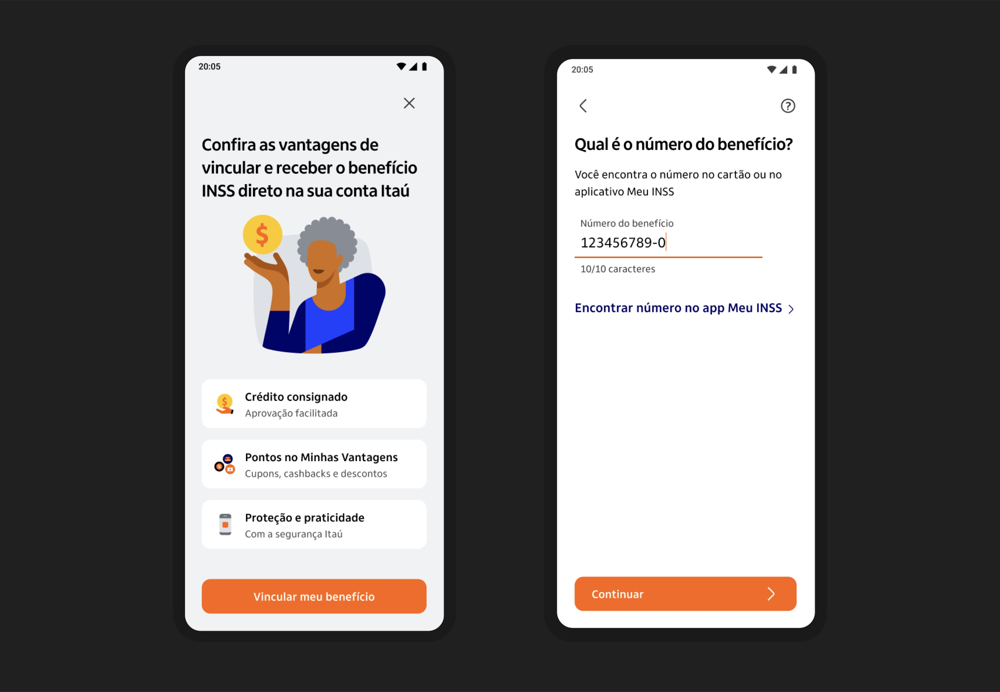
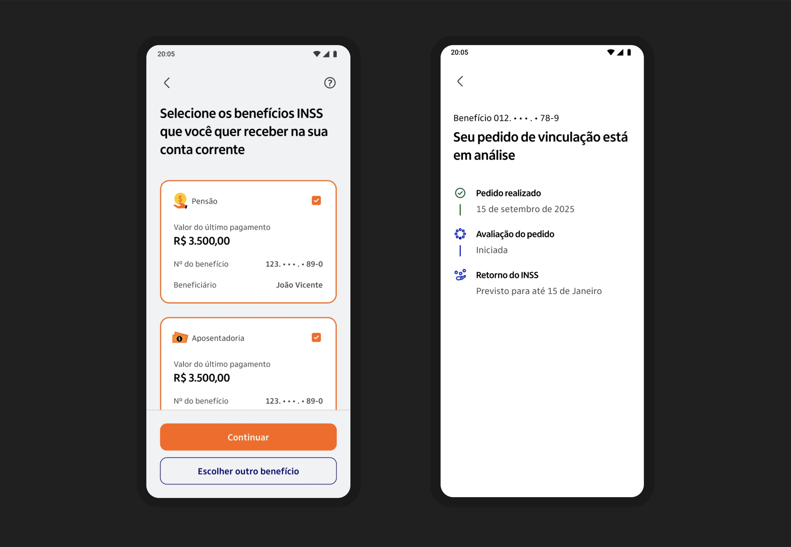
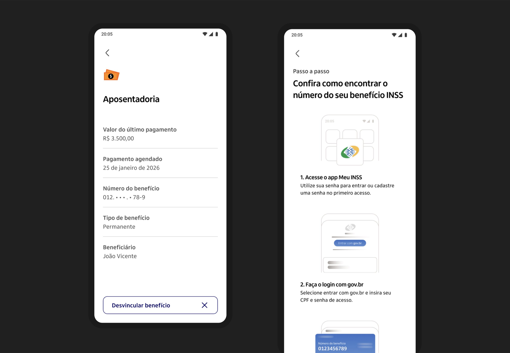

What I did
- Discovery and research with retired customers
- Information architecture for the benefits hub
- Interaction design for linking, unlinking and status
- Content design for the request and its waiting states
- Prototyping and usability testing
- Handoff and build support
Outcomes
87%
Positive customer rating
5M+
Clients impacted
+21%
In financial product sales to this audience
−67%
In customer service complaints
Overview
A dedicated space within the Itaú app where retirees can link and manage their financial benefits in one place. Instead of tracking retirement pay, pensions, and government allowances across separate channels, customers get a single, clear view of everything they receive.
Retired customers often juggle multiple income sources: social security retirement (INSS), survivor pensions, temporary leave allowances, and other benefits. Each one lives in a different place, with different payment dates and rules. Keeping track of what arrives, when, and how much becomes a constant source of uncertainty for an audience that values stability and predictability above all.
We consolidated the product into a single cohesive experience — simplifying navigation and establishing a clear visual hierarchy. The new system scaled across all touchpoints while remaining flexible enough for future growth. Itaú makes it easy to add, consult and update benefits.
3 takeaways
- 01A number nobody has memorised
- 02Nobody has exactly one benefit
- 03Saying “wait” without losing anyone
01
A number nobody has memorised
The whole flow hinges on a ten-digit benefit number printed on a card most people have not looked at in years. Rather than treat that as the customer’s problem, we wrote a step-by-step for finding it inside the government app, put it one tap from the field, and let people leave and come back without losing what they had typed.

02
Nobody has exactly one benefit
The first version assumed a single benefit per person. Support tickets said otherwise — pensions and retirements stack, often across family members. So the picker became multi-select, each card carrying the last payment amount and the beneficiary name, because that is how people actually tell two benefits apart.

03
Saying “wait” without losing anyone
The INSS can take up to four months to answer. A spinner would have been a lie. The status timeline names every stage, dates the ones that have happened, and gives an honest outer bound for the one that has not — so the answer to “did it work?” is on the screen instead of in a phone queue.
